|
|
|
|
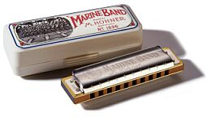
Своей теперешней конструкции губная гармоника обязана Европе, происхождению - Азии, а популяризации, в большей степени, Америке. Духовой орган попал в Европу из Китая в середине 18 века. Претерпев существенные изменения, к которым приложили руку немецкие мастера Бушман, Рихтер и Хонер, губная гармоника приобрела современный вид уже приблизительно к 30 годам 19 века. Спустя совсем небольшой промежуток времени было налажено ее массовое производство немецкой фирмой "Хонер". В 1862 году первая партия губных гармоник попала в Северную Америку – это и стало одним из самых определяющих событий в дальнейшей судьбе инструмента.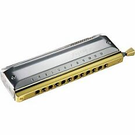
В настоящее время существует огромное количество конструкций, настроек и фирм-производителей гармоник. Основополагающими типами этого инструмента являются диатоническая и хроматическая гармоники. Диатоника (распространенное название среди музыкантов) – это небольшой инструмент, имеющий диатонический строй (аналогия: белые клавиши фортепиано). Для получения хроматических нот (черные клавиши фортепиано) музыканты используют специальные приемы, называемые бендами и овербендами. Диатоническая гармоника, в большинстве случаев, использует настройку, предложенную в 1826 году немецким мастером Рихтером. Диатоника популярна в блюзе, кантри и рок-музыке. Хроматическая гармоника в техническом плане гораздо более совершенный инструмент, в котором для получения полутонов используется слайдер – специальная кнопка, позволяющая повышать (понижать) высоту ноты. Первая модель хроматики датируется 1920 годом. Наибольшее распространение этот инструмент получил в джазе и классической музыке, но блюзовые музыканты также не гнушаются использованием более сочного и аккордеонного звучания хроматической губной гармоники.В американской музыке нет жанра, в котором не было бы слышно хорошо знакомого каждому звука губной гармоники: блюз, джаз, кантри, рок-н-ролл, фолк, даже в классической музыке найдется место для этого инструмента. Но, пожалуй, наибольшую популярность гармоника получила в блюзовой музыке, в которой этот инструмент стал таким же важным, как и гитара. Блюзмены придумали множество прозвищ этому небольшому инструменту, но самыми популярными стали: харп (harp) или саксофон Миссисипи (Mississippi saxophone).
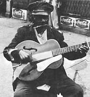
Развитие гармоники как блюзового инструмента проходило так же стремительно, как и гитары и всего жанра в целом. Развивался ли блюз в Новом Орлеане, был ли это блюз Дельты или более мягкий Пьедмонтский, гармоника следовала за ним по пятам. Блюз перебрался в Чикаго, музыка стала электрической, сразу же появились и первые музыканты, играющие на гармонике с микрофоном. В моду вошел рок - и вот харп тут, как тут; свинг – опять та же история. Это незаменимый инструмент практически в любом ансамбле. Но начнем по порядку.Дешевый, изготовленный на заводе инструмент не мог не привлечь внимание по-настоящему бедного черного населения Америки. Саксофон, труба или любой другой духовой инструмент стоил дорого. Часто музыканты мастерили всевозможные свирели, флейты и дудочки. В большинстве случаев, качество этих инструментов оставляло желать лучшего, равно как и его выразительные возможности, потому гармоника представлялась замечательной альтернативой. На ней можно было аккомпанировать гитаре, пению, а также…. имитировать множество окружающих звуков. Так, ранние записи игры на "саксофоне Миссисипи" – это еще не настоящее солирование, а скорее приукрашивание музыки необычными звуками. Известно, что при определенной сноровке гармоника может сымитировать голос младенца: "Mama", стук колес поезда по рельсам, звук скрипки и многое другое.
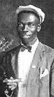
Первая запись губной гармоники принадлежит Daddy Stovepipe и была сделана в 1924 году. В то время в моде были певицы блюза, всевозможные джаг бэнды, харп нашел себе место и тут: Noah Lewis (играл на 2-х гармониках одновременно – носом и ртом!), Jaybird Coleman, Will Shade, Jed Davenport, Hammie Nixon были первыми виртуозами губной гармоники. Именно эти музыканты дали возможность заявить о гармонике, как о полноправном инструменте ансамбля. Некоторые из первых блюзовых хапреров были настолько хороши, что стали популярны и у белой аудитории тех лет. Например, DeFord Bailey в 1925 году начал записываться и играть для знаменитой радиостанции Нешвилла "Grand Ole Opry", специализировавшейся на кантри. Большинство этих самородков подарил блюзу Мемфис – родина огромного количества блюзменов во все времена.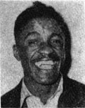
Вряд ли можно было заработать себе на жизнь достаточные деньги, снискать славу и известность, играя по деревенским кабачкам и забегаловкам, потому многие блюзмены подались с Юга на Север, в Чикаго. Тут можно было найти себе стабильный музыкальный заработок и постоянную аудиторию. Одними из самых значимых музыкантов-харперов довоенного Чикаго в 30-е годы были, несомненно, Sonny Boy Williamson (John Lee) и Jazz Gillum. У Джаз Гиллама подход к игре был скорее рэгтаймовый, чем блюзовый. Ритмические приемы он использовал в сочетании с соло линией. В этом плане показательно его довольно длительное сотрудничество с Big Bill Broonzy - самым известным и популярным гитаристом довоенного чикагского блюза. Игра же Sonny Boy напротив, была более деревенской, простой, композиции были аранжированы скорее под акустический дуэт. Его музыкальные фразы снимали современники и музыканты, пришедшие значительно позже, он был уже по-настоящему солирующим музыкантом в ансамбле, лидером. Именно Sonny Boy Williamson является автором знаменитой песни и риффа для гармоники в "Good morning little school girl". Sonny Boy играл со множеством популярных музыкантов того времени, чем снискал себе небывалую для харпера известность и популярность.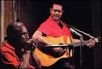
Одним из самых значимых блюзовых харперов всех времен был Sonny Terry. Он развил концепцию ритмической игры на гармонике, положил ее в основу своего уникального стиля (игру на гармонике Сонни часто сочетал со вскрикиваниями; делая это все очень быстро, он добивался неповторимого эффекта) "Whoopin". Сонни Терри был слеп с детства, потому гармоника была, пожалуй, единственным идеальным для него инструментом, ведь на ней и не видно, что играешь. Начинал свою музыкальную карьеру Сонни под крылом известного гитариста пьедмонтского стиля Blind Boy Fuller. После смерти Фуллера, вместе с другим молодым гитаристом, играющим в этом же стиле, Brownie McGhee, он сформировал, без преувеличения, самый известный блюзовый акустический дуэт. У манеры игры, подхода к звуку инструмента Sonny Terry было и есть огромное количество музыкантов-последователей, например, дуэт Cephas And Wiggins, Rick "Cookin" Sherry, Peter "Madcat" Ruth.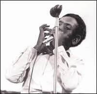
Чикагский блюз в сороковых годах стоял на пороге важных перемен – он электризировался. Музыка требовала большей громкости, напора и доходчивости. Мадди Уотерс и другие пионеры послевоенного чикагского блюза взялись за электрогитары. Таким образом, если вся группа играет громко, то нужно как-то усилить и звук гармоники. Решение нашлось быстро. По одной из многочисленных блюзовых легенд первым харпером, использовавшим микрофон и гитарный усилитель для звука равносильного по громкости электрогитаре был Snooky Pryor, но следует заметить, что очень часто он сам и являлся распространителем этих слухов. Музыкальная промышленность не выпускала микрофонов для гармоник, потому выходом из положения для музыкантов было использование дикторских микрофонов для радио, военных микрофонов и прочих, использовавшихся для человеческого голоса. Самыми популярными моделями, до сих пор не претерпевшими существенных изменений, были и остаются Green Bullet и Astatic JT-30. Идею электризации подхватили многие музыканты, среди которых был и Big Walter Horton. Биг Уолтер родился в Дельте Миссисипи, но еще в детстве семья переехала в Мемфис, где ему посчастливилось брать уроки блюза и игры на гармонике у тамошних мастеров: Will Shade и Hammie Nixon. Уже в 10-летнем возрасте он играл на харпе в составе знаменитого ансамбля "the Memphis Jug Band". В 40-х годах Уолтер частенько заезжает в Чикаго, а в начале 50-х окончательно перебирается в этот город. В Городе Ветров Большой Уолтер, благодаря своему мастерству, быстро становится очень востребованным сайдменом у большинства тогдашних звезд (Muddy Waters, Jimmy Rogers, Johnny Shines и др.) и электризирует свою игру. Стиль игры Big Walter Horton – это мелодичный подход к игре на гармонике, он чаще использует одиночные ноты, чем аккорды. Его игру можно охарактеризовать, как очень лаконичную, он очень изобретательно строил свои соло, аккуратно заполняя музыкальное пространство. Значение этой фигуры для блюзовой гармоники сложно переоценить, фактически он и Little Walter, о котором будет рассказано позже, сформировали звук гармоники чикагского послевоенного блюза, да и электризированной гармоники в целом.История зарождения послевоенного блюза Города Ветров не была бы полной без имен таких музыкантов, выбравших гармонику: Sonny Boy Willamson II (Rice Miller), Howlin’ Wolf и Jimmy Reed.
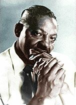
Sonny Boy II (Rice Miller) – один из наиболее влиятельных харперов в истории блюза. Он был музыкальным наставником для поразительно огромного количества музыкантов. Дата его рождения не точна, Райс Миллер любил вранье и мистификации вокруг себя, например, псевдоним он взял у другого музыканта Sonny Boy (John Lee). Sonny Boy II хоть и выступал в эру уже электрифицированной гармоники, отдавал предпочтение акустическому ее звуку, в котором он был мастер. Сонни Бой использовал в своей игре также всяческие приемы, которые позволяли ему делать настоящее шоу на сцене, например, он играл на гармонике, не держа ее в руках.Jimmy Reed – один из известнейших музыкантов Чикаго, автор огромного количества блюзовых хитов. Джимми Рид не был выдающимся музыкантом, но простые для воспроизведения и запоминания соло гармоники сделали его популярным среди харперов да и вообще очень многих музыкантов (например, Rolling Stones). Его можно назвать одним из первых мелодистов гармоники. Также Джимми Рид известен тем, что отлично справлялся с игрой на гитаре и гармонике (в холдере - специальном держателе) одновременно.
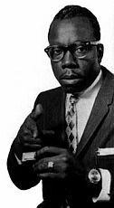
О Howlin’ Wolf (Chester Arthur Burnett) писались целые книги, снимались фильмы, я же попытаюсь вкратце описать его причастность к блюзовой губной гармонике, ее становлению. В детстве Chester был заворожен игрой, личностью и вокальной манерой известного блюзмена Дельты Чарли Паттона, потому первым его инструментом была гитара. Но где-то в начале 30-х судьба сводит его с Sonny Boy II, у которого он учится игре на губной гармонике. С тех пор он часто использует этот инструмент в своих выступлениях и записях. Игру Howlin’ Wolf на гармонике сложно назвать новаторской, виртуозной, но его харизма, неповторимый сценический образ сделали немало для популяризации этого инструмента, который тонул в руках этого гиганта блюза (в прямом и переносном смысле).Еще один музыкант, прославившийся где-то в это же время и игравший на гармонике, был луизианский блюзмен Slim Harpo. Как и Джимми Рид, Слим Харпо (это прозвище ему придумала жена) известен, в первую очередь, своими песнями (например: Scratch My Back или Shake Your Hips, King Bee – популярные среди блюзменов, а также рок-музыкантов). Харпо часто играл одновременно на гитаре и гармонике, но в отличие от своего чикагского партнера по музыкальнму цеху (Джимми Рид), Слим Харпо был более виртуозным музыкантом. В некоторых его поздних работах уже есть элементы фанка и рока, в похожем направлении спустя время работал более молодой Джуниор Веллс и другие музыканты чикагского Вест-сайд блюза.
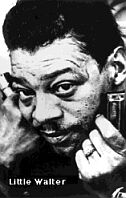
В 50-х годах основным центром развития блюза был Чикаго. На глазах эта музыка развивалась, превращаясь из сельской в музыку большого города. На первом плане были: Muddy Waters, Howlin’ Wolf, Jimmy Rogers, Hound Dog Taylor, Sonny Boy Williamson II, Robert Nighthawk и др. Редко, какой из ансамблей этих музыкантов обходился без харпера. В это время на блюзовую сцену взошла целая плеяда молодых виртуозов гармоники. Большинство из них начинали свою музыкальную карьеру как сайдмены вышеперечисленных музыкантов, но позже многие из этих харперов возглавили свои ансамбли. Первым среди этого звездного поколения 30-х годов был Little Walter и он по праву может носить титул короля современной блюзовой гармоники. Литтл Уолтер родился в небольшой деревне штата Луизиана; и с самого раннего детства ему была уготована блюзовая судьба. В 12 лет он покидает отчий дом, чтобы быть блюзовым музыкантом в Новом Орлеане, затем следуют Мемфис и другие блюзовые центры Америки. Так в 16 лет он уже оказывается в Чикаго, где, спустя всего 2 года, его берет в свой ансамбль некто иной, как Мадди Уотерс. У Мадди, как у Майлза Девиса в джазе, был просто идеальный нюх на таланты. Большинство музыкантов, что играли с ним, становились потом успешными и известными. Такая судьба была уготована и Литтл Уолтеру – спустя совсем немного времени он становится лидером собственного ансамбля. Хиты группы Уолтера ("Juke", "Sad Hours," "Mean Old World", "Blues with a Feeling," "You're So Fine") постоянно были на вершинах тогдашних хит-парадов черной музыки. Значение Маленького Уолтера для блюзовой гармоники чрезвычайно велико, часто критики сравнивает его с Чарли Паркером в джазе. Как и Паркер, Уолтер прожил короткую жизнь (как и огромное количество других блюзовых музыкантов, он умер от ранений, полученных в уличной драке), но эти 37 лет дали для блюза и гармоники очень много. Ему принадлежит концепция игры на гармоники, которая является эталоном для многих музыкантов до сих пор – свингующие соло гармоники, основанные, преимущественно, на игре одиночными нотами и очень изобретательных и мелодичных музыкальных фразах и рифах. Он одним из первых стал использовать хроматическую гармонику в блюзе. После ухода Маленького Уолтера из группы Мадди Уотерса, последний всех своих харперов еще очень долго заставлял играть "как Литтл Уолтер".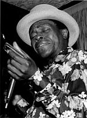
Junior Wells был тем, кто заменил Литтл Уолтера в группе Мадди Уотерса, неплохо для 18-летнего мальчишки, не правда ли? Но его забрали в армию, вернувшись из которой он застал чикагский блюз за очередной реформой. West Side Blues был тем новшеством, которое привнесли в эту музыку молодые гитаристы Magic Sam, Otis Rush, Buddy Guy. Блюз Города Ветров стал более виртуозным, деликатным, сложнее стали аранжировки – это было сочетание музыки ББ Кинга и тяжелой поступи Мадди Уотерса. Сдружившись с Бадди Гаем, Джунор Веллс оказался в центре этой круговерти. Его первый альбом "Hoodoo Man Blues" – удивительное сочетание чикагского блюза и фанка. Веллсу принадлежит исключительно новый подход к гармонике, он использует очень мало нот при игре, много прыгает по регистрам, часто использует стаккато. Все это позволяет ему очень гармонично вписать харп в концепцию зарождавшейся в 60-х музыки фанк.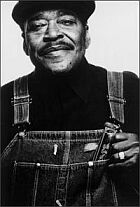
Джеймс Коттон был также одним из тех, кто занял ячейку Литтл Уолтера в ансамбле Уотерса. Знакомство произошло, когда Мадди Уотерс проезжал через Мемфис, в котором в то время жил Джеймс. Манера игры Коттона сформировалась под влиянием Sonny Boy Williamson II, которого он слушал по радио и брал уроки. Проработав длительное время у Мадди Уотерса, Коттон организовал свой собственный ансамбль, который стал весьма успешным. Карьера этого замечательного музыканта продолжается и по сей день. Без преувеличения James Cotton можно назвать современным королем блюзовой гармоники. За свою длительную музыкальную жизнь Коттон переиграл с музыкантами абсолютно разного плана: блюз, ритм-н-блюз, фанк, рок, кантри, джаз и т.д.В то время в Чикаго играли, безусловно, не только эти музыканты, среди лучших из лучших и по сей день значатся: Carey Bell, Billy Boy Arnold, Lester Davenport, Shakey Jake Harris и др. Вклад этих харперов в развитие губной гармоники в блюзе поистине огромен.
Не следует думать, что харп в это время развивался исключительно в Чикаго. На юге, в Луизиане, тоже кипела музыкальная жизнь, например, на этой сцене в то время появились: Lazy Lester и Raful Neal. В Мемфисе в то время королем харперов был Junior Parker, а традиции дельта блюза продолжал Frank Frost.
 Другая важная школа в игре на гармонике зарождалась также в Калифорнии. Родоначальником ее считается George "Harmonica" Smith. Родился Джордж Смит не в солнечной Калифорнии, а в Арканзасе, местечке под названием Хелена. Играть на гармонике начал в 4 года; подростком он отправился в странствия и переиграл со множеством музыкантов, абсолютно разную музыку: блюз, кантри, церковную музыку. Позже он выступал в Род Айленде, затем переехал Чикаго, в котором он переиграл со всеми тогдашними звездами: от Мадди Уотерса до Отиса Раша. В конце 50-х после очередных гастролей по Америке, он остался жить в Лос-Анджелесе. Именно для лос-анджелесских харперов Джордж Смит стал тем, кем был для чикагских Литтл Уолтер. Среди его учеников и последователей значится, например, Johnny Dyer, с которым Смит выступал даже дуэтом – отец и сын. Dyer родился в Миссисипи, в том же городке, что и Мадди Уотерс, Роллинг Форк. Став локально известным в родном штате, Джонни перебирается в Лос-Анджелес. Ему повезло, он попал под крыло Джорджа Смита. Последний обучил его очень многому. Как ни странно, но стиль Джорджа Смита, хотя его можно отнести к более старшему поколению, сформировался под влиянием Литтл Уолтера. Это и не мудрено, ведь в то время, когда Смит работал в Чикаго, не было харпера, который не испытал на себе влияние Маленького Уолтера. Но Джордж Смит пошел дальше, чем быть очередным клоном великого музыканта. Ему принадлежит концепция игры на хроматической гармонике, которую подхватили потом другие музыканты. Частично Смит ее позаимствовал у исполнителя на хроматике классической выучки Larry Adler, частично у Литтл Уолтера. Это удивительная комбинация свинга и мелодического подхода, в дополнение к продвинутой игре аккордами на хроматике. Ярким примером новшеств George "Harmonica" Smith является композиция "I Left My Heart In San Francisco", исполненная на хроматике с необычайным мелодизмом и мастерством.
Другая важная школа в игре на гармонике зарождалась также в Калифорнии. Родоначальником ее считается George "Harmonica" Smith. Родился Джордж Смит не в солнечной Калифорнии, а в Арканзасе, местечке под названием Хелена. Играть на гармонике начал в 4 года; подростком он отправился в странствия и переиграл со множеством музыкантов, абсолютно разную музыку: блюз, кантри, церковную музыку. Позже он выступал в Род Айленде, затем переехал Чикаго, в котором он переиграл со всеми тогдашними звездами: от Мадди Уотерса до Отиса Раша. В конце 50-х после очередных гастролей по Америке, он остался жить в Лос-Анджелесе. Именно для лос-анджелесских харперов Джордж Смит стал тем, кем был для чикагских Литтл Уолтер. Среди его учеников и последователей значится, например, Johnny Dyer, с которым Смит выступал даже дуэтом – отец и сын. Dyer родился в Миссисипи, в том же городке, что и Мадди Уотерс, Роллинг Форк. Став локально известным в родном штате, Джонни перебирается в Лос-Анджелес. Ему повезло, он попал под крыло Джорджа Смита. Последний обучил его очень многому. Как ни странно, но стиль Джорджа Смита, хотя его можно отнести к более старшему поколению, сформировался под влиянием Литтл Уолтера. Это и не мудрено, ведь в то время, когда Смит работал в Чикаго, не было харпера, который не испытал на себе влияние Маленького Уолтера. Но Джордж Смит пошел дальше, чем быть очередным клоном великого музыканта. Ему принадлежит концепция игры на хроматической гармонике, которую подхватили потом другие музыканты. Частично Смит ее позаимствовал у исполнителя на хроматике классической выучки Larry Adler, частично у Литтл Уолтера. Это удивительная комбинация свинга и мелодического подхода, в дополнение к продвинутой игре аккордами на хроматике. Ярким примером новшеств George "Harmonica" Smith является композиция "I Left My Heart In San Francisco", исполненная на хроматике с необычайным мелодизмом и мастерством.
Род Пиаца был одним из первых учеников Джорджа Смита, среди среди первого поколения белых блюзменов. Они познакомились в конце 1969 года и сформировали известную группу "Bacon Fat". До сих пор на своих альбомах Род отдает дань уважения своему учителю.
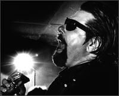
Но самым известным учеником Смита, человеком, который сам стал легендой блюза и гармоники, является William Clarke. С детства Вильям впитывал в себя блюзовую музыку, в основном это были калифорнийские музыканты T-Bone Walker, Big Joe Turner, Pee Wee Crayton. Его же первыми учителями в игре на губной гармонике стали Shakey Jake Harris и George "Harmonica" Smith. Так постепенно белый парень, закончивший колледж и работавший на заводе, стал довольно известным локально блюзменом. Кларк был мастером в игре на диатонической и хроматической гармониках, но известен он прежде всего, как мастер хроматики. За основу он взял подход Джорджа Смита и Литтл Уолтера, первопроходцев этого стиля. Но он поднял искусство играть на этом инструменте блюз до высот сопоставимых с джазовыми и классическими музыкантами (а это очень сильные школы владения инструментом, очень популярные в Европе). Его инструменталы "Greasy Gravy", "The Boss", "Work Song" – это фактически обязательная программа для любого, кто увлекается игрой на губной гармонике в стиле West Coast.James Harman - так же заметная фигура калифорнийской блюзовой сцены, но он достаточно эклектичный музыкант, чтобы его назвать исключительно West Coast музыкантом. В его программе и свинг и чикагский блюз, румбы, акустические номера и соул-блюз. В Калифорнии он музыкальный гуру для огромного количества исполнителей!
Блюзовая сцена West Coast блюза – это преимущественно белый блюз, основанный на традициях чикагского блюза и джазового свинга, число харперов, играющих в этом стиле велико, назову тех, чьи имена, на мой взгляд, заслуживают внимания: Rick Estrin (из группы Little Charlie and Night Cats), Mark Hummel, R.J. Mischo, Gary Smith, Paris Slim, Mitch Kashmar.
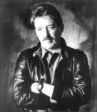
В 60-х годах 20 века рок-музыка занимала умы молодежи больше, чем какое-либо другое музыкальное направление. Но также у массового слушателя проснулся интерес к своим корням, музыке народа: блюз, фолк и т.д. Наибольшего апогея это движение достигло, конечно же, в Америке и Англии. Если молодым блюз-рокерам Туманного Альбиона приходилось учить всю эту музыку заочно, то у их заокеанских коллег была замечательная возможность заниматься своим образованием непосредственно в месте зарождения этой музыки. Одними из первых расовосмешанных блюз-роковых коллективов Города Ветров считаются ансамбли Пола Баттерфилда и Чарли Масселвайта. К счастью для нас, они были харперами.Paul Butterfield родился в 1942 году в Чикаго; будучи подростком он слушал выступления сливок чикагского блюза в клубах, впитывал в себя эту музыку, занимался игрой на губной гармонике. Благодаря упорным занятиям, уже совсем скоро он получил доступ к блюзовым джемам с лучшими музыкантами Города Ветров. Позже он знакомится с двумя другими молодыми энтузиастами блюза, гитаристами Mike Bloomfield и Elvin Bishop – так и родилась идея создать собственную группу, исполняющую блюз. Позже к этой троице присоединится молодой белый клавишник Mark Naftalin и черная ритм-секция Jerome Arnold (брат знаменитого харпера Billy Boy Arnold) бас и Sam Lay -барабаны. Последние двое вступили в группу, отколовшись от ансамбля Howlin’ Wolf. Первый альбом бэнда состоял преимущественно из каверов известных блюзовых композиций, все было исполнено довольно близко к оригиналу, ну разве что заметно - молодым музыкантом хотелось играть быстрее, виртуознее и оригинальнее. Во втором альбоме блюзового Сэма Лэя заменил более ориентированный на джаз Billy Davenport и группа стала готова к большим свершениям: смешиванию блюза, джаза, рока, даже восточной музыки. Спустя некоторое время ансамбль перестал существовать в таком составе, солисты занялись своими собственными проектами. Две главные звезды группы: Paul Butterfield и Mike Bloomfield умерли в довольно раннем возрасте в начале 80-х: алкоголь и наркотики сделали свое дело.
Для игры Баттерфилда характерно то, что он взял концепции исполнения блюза чикагских харперов (Little Walter, Big Walter Horton и др.) и переработал их для исполнения новой музыки. Соло Пола очень лаконичны, но в то же время не лишены виртуозности и скорости исполнения, он мог играть блюз, джаз, рок, соул-музыку и везде звучание его инструмента было уместным!
Вторым белым героем гармоники 60-х стал Чарли Масселвайт. В отличие от Баттерфилда, путь Чарли к этой музыке был более блюзовый. Масселвайт родился в Миссисипи, но рос в Мемфисе, в котором судьба свела его со многими старейшими музыкантами этого города, например, Will Shade, Furry Lewis, Gus Cannon. У них Чарли сперва научился играть на гитаре, а затем и гармонике. Способного парня старые "черные коты" приняли в свое сообщество, он часто выступал с ними, исполняя больше деревенский вариант блюза, чем городской. Позже в поисках работы Чарли подался в Чикаго, там он тоже быстро становится известным, много выступает дуэтом с Биг Джо Вильямсом, на сцену к себе его приглашают Мадди Уотерс, Литтл Уолтер и другие звезды. В это же время он тесно сдружился с John Lee Hooker(он даже был свидетелем на свадьбе Масселвайта) и Carey Bell, он много берет от старших коллег. Решив не записываться на том же лейбле, что и Пол Баттерфилд (Elektra), свой первый альбом "Stand Back! Here Comes Charley Musselwhite's Southside Band" он издает на Vanguard. Как и у Пола, ансамбль Чарли был смешанным (редкость по тем временам), так гитарист-виртуоз Harvey Mandel и клавшник Barry Goldberg были белыми, а вот барабанщик Fred Below черным. В это время Масселвайт много сотрудничает с другими музыкантами (на записях его можно услышать у другого талантливого белого блюзмена того времени John Hammond), активно участвует в создании того, что станет эталоном белого блюз рока. Его следующие альбомы на Vanguard: "Stone Blues" и "Tennessee Woman" демонстрируют его развитие как музыканта в те годы. Перебравшись в Калифорнию, Лос-Анджелес, Чарли становится популярным и там, выступает даже в концертной Мекке того времени – зале Филмор. На Западном Побережье Чарли знакомится со звездами тамошней музыки: George Harmonica Smith, Rod Piazza, благодаря чему обогащает свою стилистику. Пережив долгий кризис алкогольной зависимости в 70-х и 80-х, в 90 годах 20-го века Чарли записывает ряд успешних альбомов на известном лейбле "Alligator". Этими записями он подтверждает свой статус звездного и незабытого музыканта. Годы выступлений с абсолютно разными музыкантами (Чарли записывался и с ансамблями кубинской музыки, у него есть и кантри-альбом, играл он и с Томом Уейтсом) помогли выработать Масселвайту неповторимый и неподражаемый стиль. Чарли - желанный гость на многих фестивалях и записях других исполнителей.
Другим известным ансамблем белого блюза тех лет, возможно не снискавшим такой славы и популярности как два вышеназванных, была группа Siegel-Schwall Band. Основали ее два белых парня: харпер Corky Siegel и гитарист Jim Schwall. Пережив несколько смен составов и перерывов в совместной музыкальной деятельности, музыканты выступают и записываются до сих пор. Последний их альбом датирован 2005 годом.
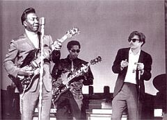
Paul Oscher стал первым белым участником ансамбля Мадди Уотерса и, нужно сказать, первым белым харпером в этой звездной череде. Большую часть своей музыкальной карьеры Пол провел как сайдмен. Но его сольная дискография очень интересна, на ней он выступает не только в роли харпера, а и гитариста, клавишника и исполнителя на экзотических гармониках. Пол был первым, кто записал и использовал мелодику в блюзе ("Muddy Water's album Live at Mr. Kelly's" 1971 год), та же ситуация и с басовой гармоникой.Jerry Portnoy - еще один белый харпер блюз-бэнда Мадди Уотерса. После смерти последнего, Джерри стал членом The Legendary Blues Band, который был собран из музыкантов ансамбля Мадди. Не меньшую известность Джерри получил, как участник групп Eric Clapton и Ronnie Earl, да и вообще сайдмен очень многих записей и выступлений других музыкантов. Его сольные записи - образчик уникального подхода к инструменту и звуку гармоники. Игра Джерри сочетает в себе блюзовый и джазовый оттенки.
Все вышеназванные музыканты были первыми белыми, которые добились признания и успеха в игре на харпе. Butterfield, Musselwhite, Siegel проторили дорогу для блюз-рокового звучания гармоники, в то время, как Paul Oshcher и Jerry Portnoy добились успеха на чисто блюзовом пути. Множество более современных, продвинутых музыкантов, например, Paul DeLay и Norton Buffalo называют именно их в качестве главного связующего звена между традиционным чикагским блюзом и более современным звуком гармоники. Именно в это время (1960-е и 70-е годы) харп проник в рок-музыку. Так, например, успеха и известности добилась группа "J Geils Band", в которой на гармонике играл виртуозный харпер Magic Dick.
Казалось бы, что все ноты и музыкальные фразы сыграны, приемы использованы и ничего нового в подходе к игре на диатонической гармонике не будет сказано еще очень долгое время. Но это не так - появились харперы, заявившие о себе и продемонстрировавшие новый подход к инструменту. Первыми в череде новаторов, пришедшими на широкую музыкальную сцену почти сразу после белой революции инструмента, были, на мой взгляд, Johnny Mars и Sugar Blue. Их заявлением была необычайная скорость игры на гармонике, они могли тягаться, а иногда и превзойти кантри-харперов, чьи скоростные соло известны многим.
Джонни Марс родился в Южной Каролине в 1942 году и в 9 лет получил свою гармонику, на которой начал усиленно тренироваться. Окончив колледж, он организовал свой первый блюз-бэнд, с которым выступал в окрестностях Нью-Йорка. Большую часть своей жизни он провел в Европе, где и получил некоторую известность, скандинавская пресса назвала его даже "Джимми Хендриксом" блюзовой гармоники – помимо скоростной игры коньком Марса является использование всевозможных электронных эффектов, что помогает звучать его инструменту очень по-разному.
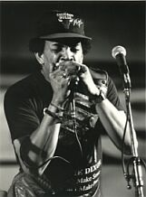
Sugar Blue родился в Нью-Йорке, и так как его матерью быле певица и танцовщица из знаменитого театра Аполло, он с детства был внутри музыкального общества. С детства он слушает игру на гармонике Боба Дилана и Стиви Уандера, они и определило его выбор инструмента, но так же увлекается джазом, би-бопом, что повлияло на его стиль. Выступать Sugar Blue начал в середине 70-х, играл преимущественно на улицах, но быстро добивается известности и его приглашают в свои ансамбли старые блюзовые музыканты: Brownie McGhee, Roosvelt Sykes, Johnny Shines и др. Как и множество блюзменов он поехал искать лучшей судьбы и признания в Европу, в Париж, где и знакомится с группой Rolling Stones. Последние приглашают его к себе на запись, так например, "Miss You", с альбома группы "Some Girls", становится его билетом в звездную когорту музыкантов. Это был не единственный случай их сотрудничества. Sugar Blue выступает и записывается со многоими известнейшими музыкантами современности (не только блюзовыми): BB King, Willie Dixon, Ray Charles, James Cotton, Bob Dylan, Carey Bell, Junior Wells, Fats Domino, Jerry Lee Lewis и даже Frank Zappa, Stan Getz и Art Blakey!В 90-х он выпускает 2 довольно успешных альбома на Аллигаторе, на которых демонстрирует музыкальное разнообразие и свой особенный подход к музыке.
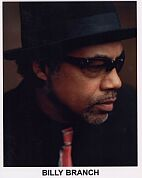
Будучи младше всех вышеперечисленных, Билл Бранч, имел возможность учиться у старших музыкантов, вырабатывать свой уникальный стиль. Музыкальную карьеру он начал довольно рано, собрав группу Sons Of Blues, в которой, помимо него играли еще, например, сыновья известных блюзменов Вилли Диксона и Кэри Бела. Позже он был участником Willie Dixon's Chicago Blues All-Stars. Таким образом, к моменту, когда Билли начал сольную карьеру он был уже подкованным, профессиональным и ярким музыкантом. В 1990 году был выпущен известный альбом "Harp Attack!", на котором Билли был, выражаясь фигурально, принят в королевскую семью харперов, посвящали его: Junior Wells, James Cotton и Carey Bell. Billy Branch хорош в игре на гармонике не только в блюзе, его музыкальные работы - это удачное смешение блюза, джаза, рока, рэгги и соул-музыки. В настоящее время он признанный виртуоз и учитель в игре на этом инструменте.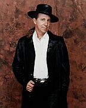
Одним из самых важных харперов современности можно по праву назвать Norton Buffalo. Нортон уникальный музыкант, его техника - удивительное сочетание кантри и блюза. Он может играть быстро, как кантри-харпер Чарли Маккой, ритмично, как Сонни Терри, и с мелодизмом, как Toots Thielemans. И поверьте – это не преувеличение! За свою музыкальную карьеру он переиграл со множеством разных музыкантов: Stive Miller, Johnny Cash, Elvin Bishop, Bonnie Raitt. Особого внимания заслуживают его альбомы с отличным слайд-гитаристом Roy Rogers.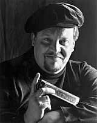
Игра Paul DeLay на гармонике – это сочетание традиций игры на инструменте George "Harmonica" Smith, Little Walter, Big Walter Horton, а так же Charlie Musselwhite и Paul Butterfield. Сам Пол не раз заявлял об этих музыкантах, как о наиболее повлиявших на его стиль. С детства Paul DeLay испытывал тягу к музыке, перепробовал множество инструментов. Но после того, как он услышал игру Баттерфилда в композиции "Good Morning Little Schoolgirl", сомнений в выборе инструмента у него не осталось. В своем родном Портленде в 20 лет он уже сформировал первый ансамбль, а спустя 6 лет, в 1978 году, уже выступал со звездами блюза Sunnyland Slim и Hubert Sumlin в Чикаго. У Пола начались проблемы с алкоголем и наркотиками, из-за которых на три года он угодил за решетку. Но он не терял времени в тюрьме, все это время он работал над собственным материалом. Выйдя на свободу, Пол выпустил целую обойму альбомов, демонстрирующих уникальный подход к инструменту и отличные песни. К сожалению, в 2007 году Пола не стало. Я считаю Paul DeLay самым важным исполнителем блюза на хроматической гармонике, в игре на которой он достиг просто небывалых высот! Именно он, на мой взгляд, продвинул этот инструмент вперед, выработал особенный подход и манеру игру на нем. Энциклопедии часто определяют его как музыканта, выступающего в стиле West Coast. Я не согласен с этим – стилистика Пола гораздо шире: тут и чикагский блюз, и соул, и потрясающие своей виртуозностью и мелодизмом джазовые номера, часто в его музыке слышны и фанковые ритмы.Революционное открытие в игре на диатонической гармонике сделал Howard Levy, оно заключается в возможности играть на диатонике все хроматические ноты! Для этого нужно овладеть техникой овербендов (overblow и overdraw). Леви музыкант не блюзовый, потому его открытие пока еще не особенно прижилось в этой музыке. Самым известным исполнителем блюза, использующим это новшество, является канадский харпер кубинского происхождения Carlos Del Junco. Этим приемам Карлос учился непосредственно у Леви. Музыка Del Junco очень самобытна и интересна – потрясающее сочетание латиноамериканской музыки с блюзом, джазом и роком.
Как говорят: "мал золотник, да дорог" - это выражение в полной мере подходит к губной гармонике. Этот, на первый взгляд, примитивный инструмент при ближайшем рассмотрении, оказывается не так прост, как может показаться сначала. При еще более детальном изучении становится очевидным, что то начальное представление ошибочно, и как в случае с другими инструментами, гармоника заслуживает тщательного изучения. В этой статье я постарался дать хронологический срез истории этого инструмента в блюзовой музыке. Конечно, всех отличных музыкантов упомянуть сложно, да и практически невозможно. За бортом статьи остались такие замечательные харперы, как: Kim Wilson, Gary Primich, Charlie Sayles, Sugar Ray Norcia, Lester Butler, Jean Jacques Milteau, Harmonica Fats, Junior Parker, Mark Ford, John Juke Logan, Little Mike, Sam Myers, Steve Baker, Paul Lamb, дуэты Satan and Adam, Tom Ball and Kenny Sultan, Forest City Joe и др.
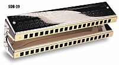
История гармоники в музыке не ограничивается блюзом, в Европе очень сильна школа исполнения классической музыки, популярны и харперы, исполняющие фольклорную музыку (Ирландия, Америка и т.д.), просто огромно количество джазовых исполнителей на гармонике. В Америке в середине 20 века очень были популярны ансамбли, состоявшие исключительно из харперов (басовая, диатоническая, хроматическая, аккордная и другие гармоники), например, ансамбли Johnny Puleo и Borrah Minnevitch. Особняком стоит важнейшая школа игры на гармонике кантри и блюграсс музыки.